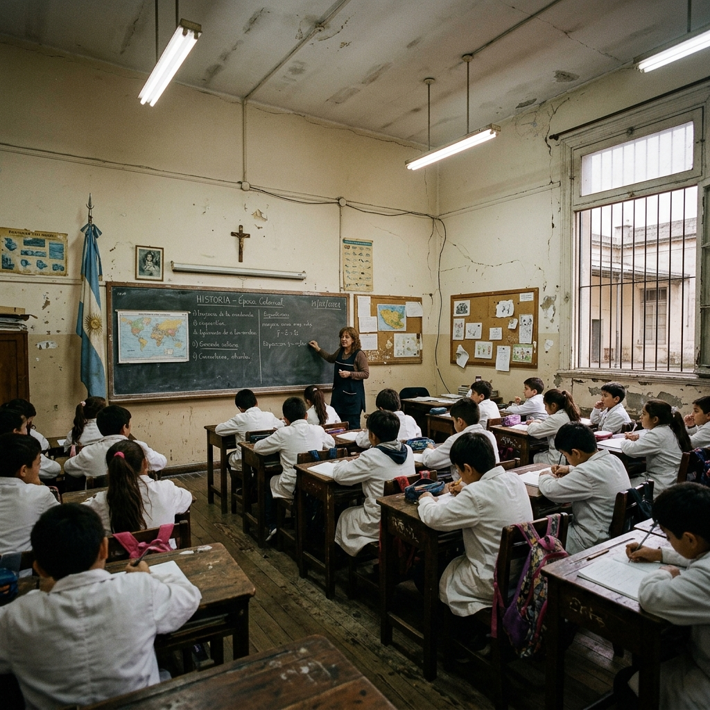
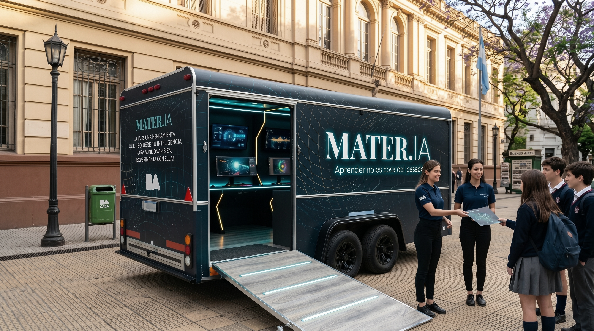
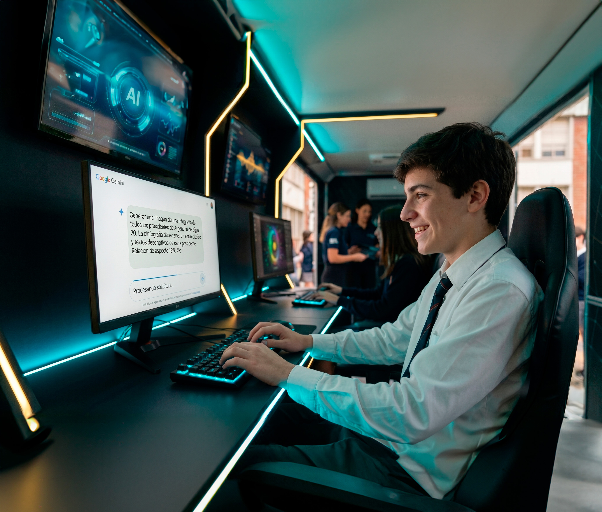

Desarrollar criterio
Aprender a investigar, contrastar y no aceptar el primer resultado como una verdad absoluta.
MATER.IA — Una iniciativa del Gobierno de la Ciudad de Buenos Aires

de los empleados espera que las nuevas tecnologías cambien significativamente su rol laboral tan pronto como en 2026.
de los trabajadores teme que la tecnología vuelva completamente obsoletos sus puestos de trabajo para el año 2030.
de la fuerza laboral requerirá recapacitación debido a la automatización impulsada por la IA para finales de 2026.

Este no es un lugar para aprender a hacer tareas más rápido.
Es una extensión del aula diseñada para entender que la Inteligencia Artificial requiere de la inteligencia humana para funcionar con criterio.
Se trata de pasar de la dependencia pasiva ("que la IA lo haga por mí") al liderazgo activo ("yo uso la IA para hacerlo mejor").

Aprender a investigar, contrastar y no aceptar el primer resultado como una verdad absoluta.
Una buena respuesta depende de una mente humana educada para preguntar bien. La máquina procesa los datos, pero vos tomás las decisiones.
La IA hará todo más rápido, el tiempo restante debemos usarlo para crear, innovar y aplicar su criterio personal